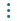

You can import data by uploading Excel spreadsheets and .csv files to BRIX apps. So you can quickly add a large amount of data to the system.
начало внимание
By default, all users can import data to the system. Learn how to restrict import in the Access to app data article.
конец внимание
You can also add or update app items in batches by using scripts. For more information, see the Batch actions with app items in scripts article.
To start importing data, follow these steps:
1. Create an app that will store the data.
To ensure that data is imported correctly, add fields to the app form that will store this data. Suppose you want to upload your customer database to BRIX. Customer data is stored in a .xlsx table in the following columns: company name, phone, email address, contact person, and bank details. In order to complete the import, you first need to create an app and add fields of the corresponding types to its form: String (to store names), Phone Number, Email, Full Name, and Text.
If the Status system field is specified in the table you import, statuses need to be configured in the app.
2. Generate a template for the app.
A template is used to make the file you are going to upload meet the import requirements.
To download the template, click the  icon in the upper right corner of the app page and select Data Import. In the window that opens, choose the type of template depending on the type of file you are planning to import: .xlsx or .csv.
3. Bring the file you want to import according to the template.
The template contains a table with columns that match app fields. In each column, there is an example of data it can contain.
You can copy the names of fields from the template into your file or fill out the template with your data. Here are the requirements for the format of the data you want to import:
Field type |
Data format in the template |
Note |
Example value |
Name |
Text |
|
Invoice |
String |
Text |
|
Order |
Number |
Integer or non-integer |
In the format preset in the template column. |
27.37 |
Yes/No switch |
true or false |
true means the variable is switched to Yes or another value that replaces it. false means the variable is switched to No or another value that replaces it. |
Text value: Enabled Value in the template: true |
Date/Time |
Date and time |
In the format preset in the template column. |
4/17/2022 3:27 PM |
Category |
Text |
The option of the Category field (the name, not the code) assigned to the field during import. |
Let’s say the Delivery field has three values: Customer pickup, Courier delivery, and Parcel collection. You need to import an order delivered by courier. To do this, in the import template in the row with order data in the Delivery column, specify Courier delivery. |
Money |
Integer or non‑integer |
|
125.6 |
Account |
|
Cannot be imported. |
|
Phone Number |
Integer |
|
16505551122 |
Text |
Format: name@domain |
name@example.com |
|
Files |
File name[file ID] |
You can only import the ID of the file uploaded to BRIX. It will be displayed in the browser address bar, if you click on the file name. |
file1[fd2af6d9-3e95-4896-9604-250929347acb] |
Image |
Image name[image ID] |
You can only import the ID of the image uploaded to BRIX. It will be displayed in the browser address bar if you click on the image name. |
image1[fd2af6d9-3e95-4896-9604-250929347acb] |
Full Name
|
Text |
The first word is considered the last name, the second one the first name, and the others the middle name. |
Rogers Sarah Jane |
Link |
Link text |
|
https://brix365.com/en |
Table |
[{"rows":[{"column code":{"cell code": "cell value"}}], "result":{"__count":number of rows in the table}, "view":""}] |
A string listing all cells in the table with their values. Specify the number of rows in the result parameter. Leave the view parameter without value. It will be filled in automatically if the template view is set up for the table. |
For example, an entry for a table with Account and Customer Name columns, consisting of two rows: [{"rows":[{"account":{"login":"@example"}, "name":{"lastname": "Rogers", "firstname": "Sarah", ‘middlename’: ‘Jane}}, {"account":{"login":"@example1"}}, "name":{”lastname": ‘Rogers, { "firstname": "Sarah", ‘middlename’: ‘Jane }}], "result":{"__count":2},"view":""}] |
Users |
[User’s ID] |
To get a user’s ID, go to Administration > Users and click on the name of the user’s account. The ID will be displayed in your browser’s address bar. |
[29cadb73-8246-4f3d-9992-87a4a1ad20cf] |
App |
[App item’s ID] |
The app item needs to belong to the app that the field is linked with. |
[12f05b18-5559-40cb-b138-97b8d0233f4c] |
4. Upload the file populated with data to BRIX.
When you make sure the file you are importing is aligned with the template, go back to the BRIX interface. Click the icon in the upper right corner of the app page and select Data Import. In the opened window, upload the prepared file.
Here you can also check the Ignore event handler box. It disables all event handlers configured in Administration > Modules while importing the data. This allows you to reduce the system load if an event handler runs whenever a new app item is created (for example, if a notification is sent or a business process is launched).
Click Import, then Close. The new data will appear in the app.
Please note that the importing speed depends on the number of app items and the number of indexes in the PostgreSQL database. Indexes are created in the database for each app property with the Search and sort option enabled. If you need to import a large volume of data, we recommend enabling this option after the import.
Import features
By importing files, you can update information stored in several app items at once. To do that, export data from an existing app into a file (you need to check the Export system information box). Edit field values in the file, then import it back into the app. All edited app items will be updated.
Please note that if you specify an ID (status: id) in the Status system field that does not exist in the app, the item will be assigned an initial status.
If you export data from an app without system information, new items will be created in the app when you import the file.
Import multiple values
You can import multiple values into one BRIX field. In this case, you should use comma (,) as separator.
начало примера
Example:
company@example1.com, company@example2.com allow you to add two email addresses to one field.
конец примера
This works for the following types of fields: Number, Category, Phone Number, Email, Link, Users, and App.
Possible errors
The format of the uploaded data must match the type of field. Otherwise, you will see a warning indicating the row and column in which the incorrect entry was found.
Correct the entry and continue importing.
Found a typo? Select it and press Ctrl+Enter to send us feedback